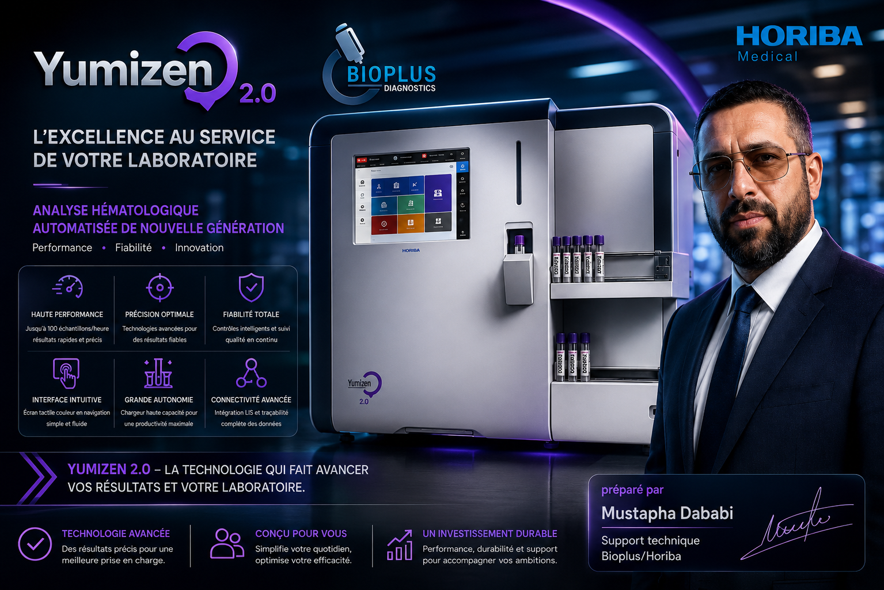
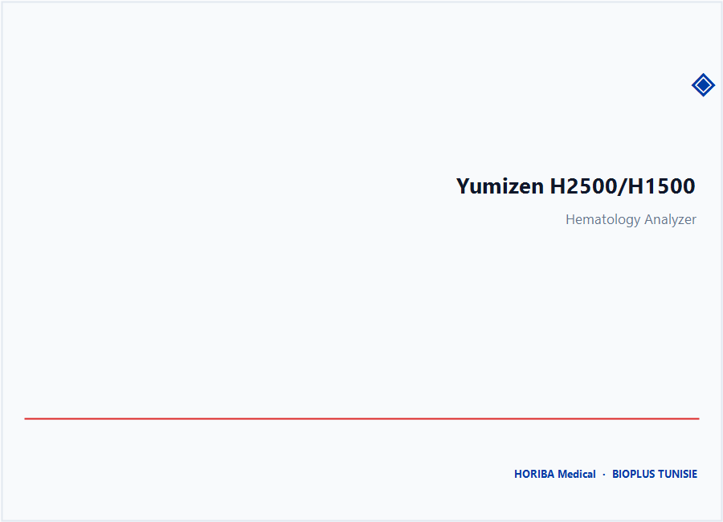
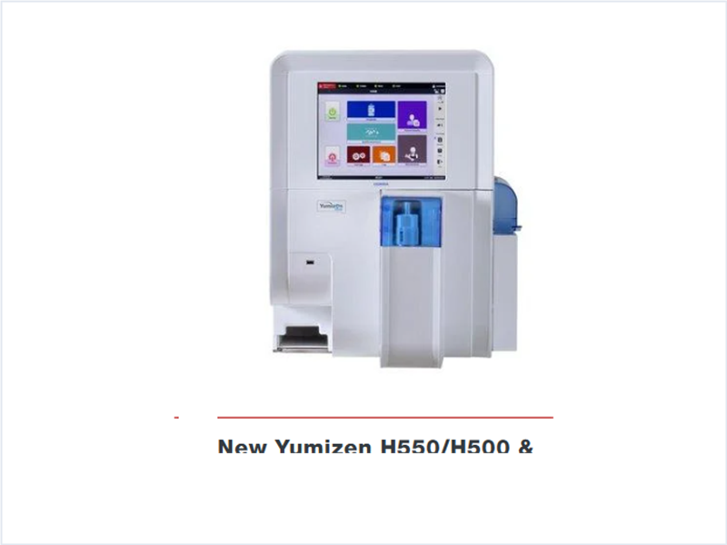
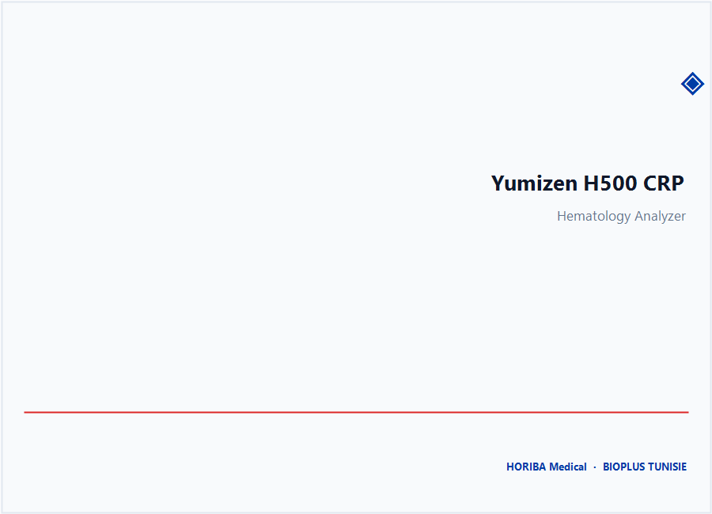
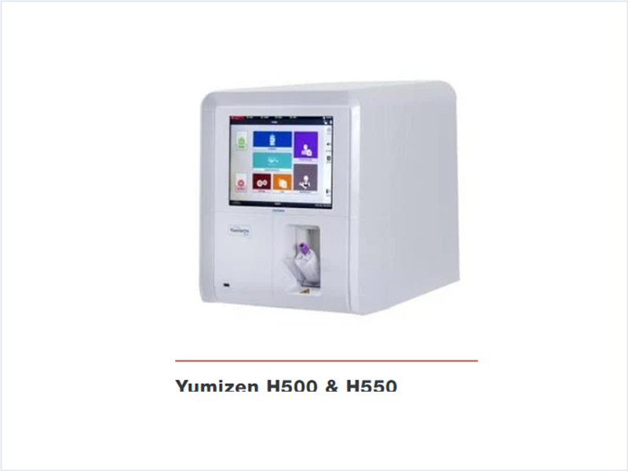
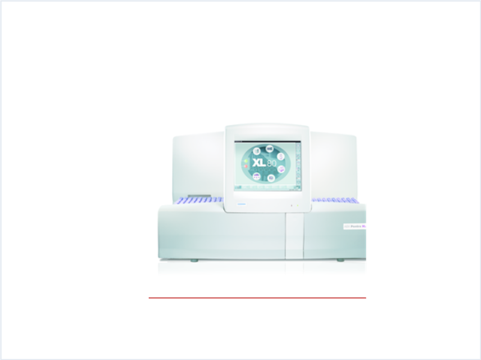
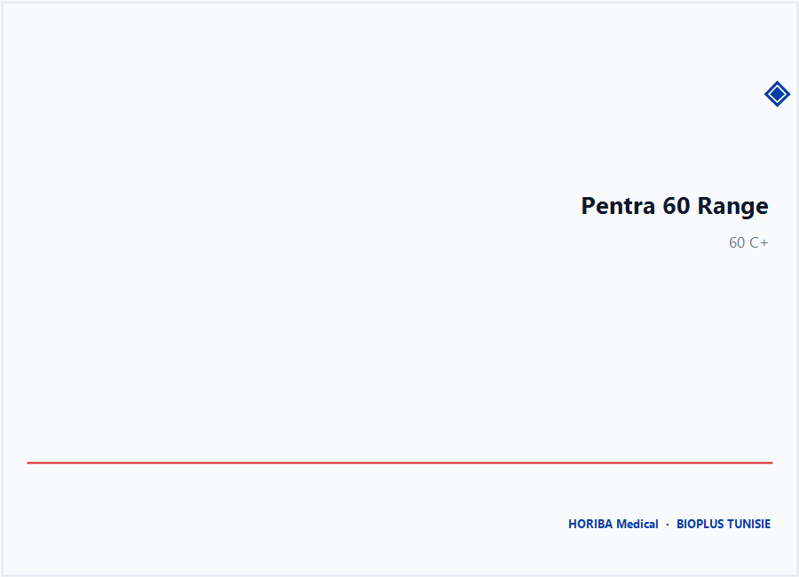
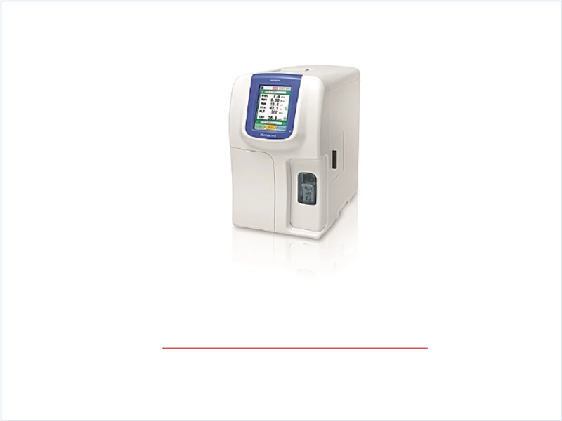

01
FIABILITÉ
Assurer la continuité et la fiabilité du fonctionnement des équipements de laboratoire, au cœur de l'activité diagnostique.
BIOPLUS TUNISIE · HORIBA MEDICAL
Expertise technique au service de la performance du laboratoire.
Maintenance, diagnostic, installation et support technique des solutions d'hématologie.
Assurer la continuité et la fiabilité du fonctionnement des équipements de laboratoire, au cœur de l'activité diagnostique.
Approche structurée du diagnostic matériel, logiciel et réseau — analyse des logs système et identification méthodique des causes.
Organisation, priorisation et intervention technique adaptée aux contraintes du terrain et aux urgences laboratoire.
Axe de développement présenté comme tel, sans certification revendiquée.
Solutions d'hématologie maîtrisées sur le terrain — visuels à titre illustratif.

Middleware et station de validation experte
Centralisation, validation et traçabilité des résultats d'hématologie. Interface entre automates, LIS et système qualité du laboratoire.

Plateforme haut débit pour laboratoires à forte activité.
Explorer
Analyse combinée NFS + VS automatisée.
Explorer




Visuels et descriptions à titre illustratif, basés sur le portfolio fourni. Aucune performance chiffrée n'est affichée sans source confirmée.
Je m'appelle Mustapha Dababi, Responsable Technique Hématologie chez Bioplus Tunisie.
Depuis près de six ans, j'accompagne les laboratoires de Tunisie dans ce qui ne doit jamais s'arrêter : le diagnostic. À la tête de l'équipe Hématologie, je veille sur un parc de plus de 200 automates HORIBA — du plus compact au plus capacitaire, jusqu'au middleware P8000 qui orchestre l'ensemble.
Mon approche s'est forgée sur le terrain, comme technicien SAV, au plus près des automates et des équipes. Écouter, analyser les logs, isoler la cause — matérielle, logicielle ou réseau — puis transmettre pour que le laboratoire gagne en autonomie. C'est cette rigueur, alliée à la réactivité, qui guide aujourd'hui chacune de mes interventions.
Ce regard technique vient de loin : un Bac Technique obtenu avec mention Assez Bien en 2007, deux années exigeantes en classes préparatoires à l'IPEI El Manar jusqu'en 2e année en 2010, puis une Licence Appliquée en TIC à la FST El Manar en 2012. Un parcours qui a fait très tôt le lien entre l'automate et son écosystème — TCP/IP, VPN IPsec, routeurs Cisco, univers LIS — et qui m'amène aujourd'hui à explorer l'analyse de données et l'IA au service d'une maintenance plus prédictive.
“La technologie n'a de valeur que si le laboratoire peut compter dessus, chaque jour.”
Vous avez une question technique, un projet ou souhaitez échanger sur une solution de laboratoire ?